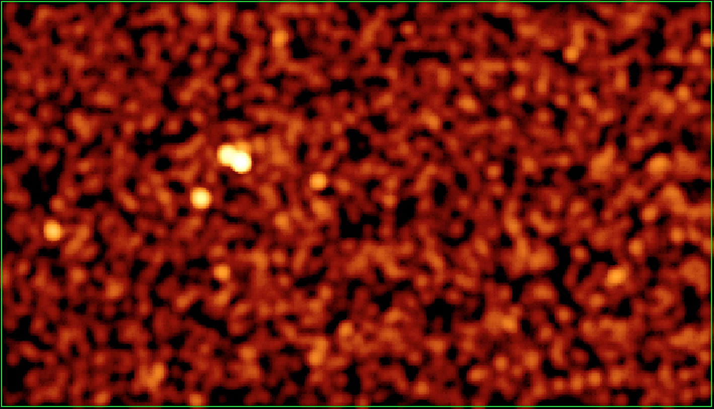
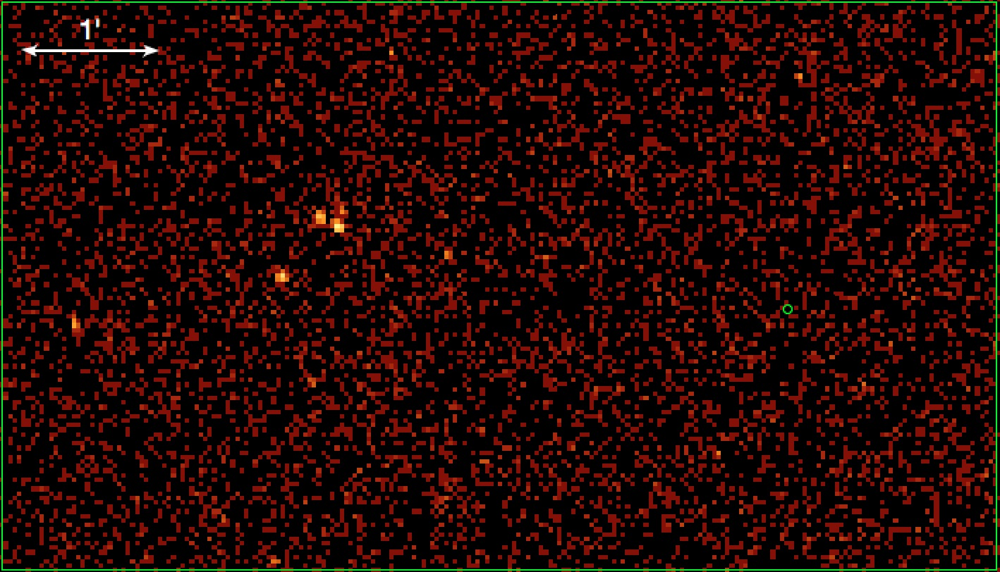
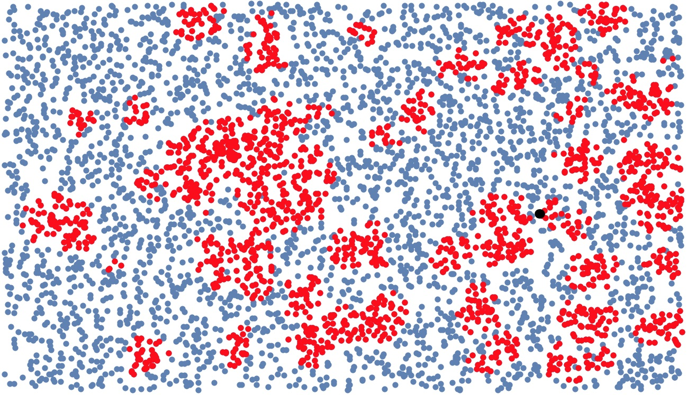

Extended X-ray emission search around double NS PSR J1906+0746.
Optimally filtered (to reduce foreground and background) ACIS-I2 image (56 ks, 0.7-7 keV) of the vicinity
of J1906+0746 from CXO ObsID 14821.

Optimally filtered (to reduce foreground and background) ACIS-I2 image (89 ks, 0.7-7 keV) of the vicinity
of J1906+0746 from CXO ObsID 14821 and obsID 7618 combined together. Pixel size is 1.96 arcseconds. Pulsar position
is shown by the r=2'' circle. There are zero counts in this apperture implying pulsar efficiency of only 4.3-6.8
times 10 to the power -6 (see Kargaltsev and Pavlov, 2009, ApJ, 702, 433 for example of the calculation).
This is one of the lowest known efficiencies for any rotation powered pulsar!

Results of the cluster search using hybrid OPTIC/DBSCAN algorithm (with minimum 20 events per cluster) applied to the ObsID 14821 data. Pulsar position is shown by the
black dot.

All images show the same part of the sky. This work is supported by SAO/CXO award GO3-14073X.
The web page is maintained by Oleg Kargaltsev. Report questions, problems and broken links
to (kargaltsev at gwu.edu).
Last revision: October 2016